Every number on the map comes from one of the datasets below. Counts are raw, with no derived scores.
| Dataset | Source | Year | Records | Govt./ Pvt. |
|---|---|---|---|---|
| Language Infrastructure | ||||
| Goethe Institute Locations | Goethe Institut | 2026 | 6 | Private |
| Goethe Centre Locations | Goethe Institut | 2026 | 4 | Private |
| PASCH Schools List | PASCH Initiative | 2026 | 56 | Private |
| Examination Centres – Goethe Institut | Goethe Institut | 2026 | 10 | Private |
| telc Examination Centre | telc (The European Language Certificates) | 2026 | 7 | Private |
| No. of HEIs | AISHE – All-India Survey of Higher Education | 2026 | 40 | Both |
| No. of SIICs | MSDE – Lok Sabha Question | 2026 | 7 | Government |
| No. of PDOT centres | MEA – PDOT Portal | 2026 | 92 | Government |
| No. of IISCs | National Skill Development Corporation (NSDC) | 2020 | 506 | Government |
| Health Infrastructure | ||||
| No. of Healthcare Facilities | National Accreditation Board for Hospitals & Healthcare Providers (NABH) | 2026 | 29,000+ | Both |
| No. of NMC Medical Colleges | National Medical Commission (NMC) | 2026 | 898 | Both |
| No. of INC Nursing Colleges | Indian Nursing Council (INC) | 2024–26 | 3,484 | Both |
The data pipeline processes raw public registers, institutional directories, and web extractions across three sequential layers to power the interactive map and summary cards.
nabh_scraper.py) fetching 20,000+ facilities to JSONL checkpoints, pdfplumber scripts parsing NMC UG/PG medical seat matrices, and human-verified extractions for INC nursing colleges, Goethe-Institut/telc test centres, and MSDE/NSDC skilling directories.(name, state, city/pincode).normalize.py)infrastructure-cleaned.json, cities.json, and states.json.recountFromPoints()) computes domain and category totals at runtime from rendered coordinates, preventing numeric drift between UI cards, data tables, and map markers.| Stage | Input Sources | Processing & Validation Logic | Output Artifact |
|---|---|---|---|
| 1. Scraping & PDF Extraction | NABH Portal, NMC PG PDFs, INC Nursing Reports, NSDC / MEA Portals | Rule-based category classification by certificate URL, badge class, and acc. number prefix; table extraction with forward-fill for merged PDF cells. | Raw .jsonl checkpoints and intermediate .xlsx QA sheets |
| 2. Eligibility & Deduplication | Raw facility & college records | German recognition filter; two-stage deduplication. | Curated, qualified allopathic clinical & training registry |
| 3. City Mapping & Normalization | Cleaned records + Pin-code/Address strings | Address text parsed for canonical state/city; geographical entity grouping (Notes 1–4; Delhi 9-district union, Mumbai City + Suburban merge). | infrastructure-cleaned.json, cities.json, states.json |